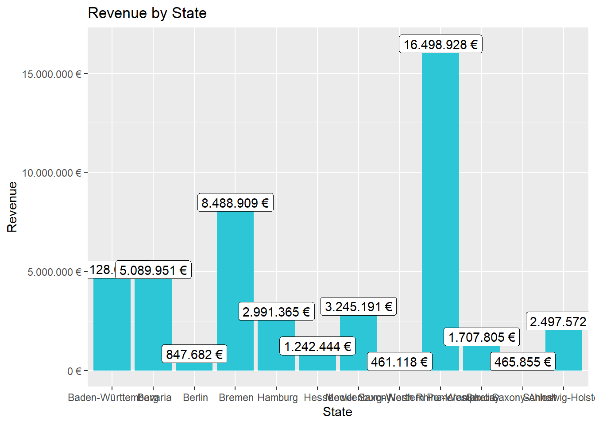

Journal (Business Data Science Basics)
Aashik Udupi
2020-12-06
1 Sales Analysis
1.1 Importing all required libraries
1.2 Importing Files
bikeshops_tbl <- read_excel(path = "C:/Users/Aashik Udupi/Desktop/R_Projects/00_data/01_bike_sales/01_raw_data/bikeshops.xlsx")
bikes_tbl <- read_excel(path = "C:/Users/Aashik Udupi/Desktop/R_Projects/00_data/01_bike_sales/01_raw_data/bikes.xlsx")
orderlines_tbl <- read_excel(path = "C:/Users/Aashik Udupi/Desktop/R_Projects/00_data/01_bike_sales/01_raw_data/orderlines.xlsx")1.3 Examining Data
bikeshops_tbl## # A tibble: 30 x 5
## bikeshop.id name location lat lng
## <dbl> <chr> <chr> <dbl> <dbl>
## 1 1 Zum Goldenen Lenker Berlin, Berlin 52.5 13.4
## 2 2 AlexandeRad Hamburg, Hamburg 53.6 10.0
## 3 3 Fahrradladen 16 Munich, Bavaria 48.2 11.6
## 4 4 Bikestation Köln Cologne, North Rhine-Westphalia 50.9 6.95
## 5 5 Montimare Frankfurt, Hesse 50.1 8.68
## 6 6 fahrschneller Stuttgart, Baden-Württemberg 48.8 9.18
## 7 7 Rad Ab Düsseldorf, North Rhine-Westph~ 51.2 6.79
## 8 8 Lucky Bike Dortmund, North Rhine-Westphal~ 51.5 7.47
## 9 9 Zweirad-Center Stadl~ Essen, North Rhine-Westphalia 51.5 7.01
## 10 10 WITT-RAD Bremen, Bremen 53.1 8.83
## # ... with 20 more rowsbikes_tbl## # A tibble: 231 x 9
## bike.id model model.year frame.material weight price category gender url
## <dbl> <chr> <dbl> <chr> <dbl> <dbl> <chr> <chr> <chr>
## 1 2875 Aeroa~ 2020 carbon 7.6 4579 Road - ~ unisex https:~
## 2 2873 Aeroa~ 2020 carbon 7.27 6919 Road - ~ unisex https:~
## 3 2874 Aeroa~ 2020 carbon 7.1 6429 Road - ~ unisex https:~
## 4 2876 Aeroa~ 2020 carbon 7.73 5069 Road - ~ unisex https:~
## 5 2877 Aeroa~ 2020 carbon 7.83 3609 Road - ~ unisex https:~
## 6 2225 Aeroa~ 2019 carbon 6.8 6139 Road - ~ unisex https:~
## 7 2091 Aeroa~ 2019 carbon 6.8 5359 Road - ~ unisex https:~
## 8 2086 Aeroa~ 2021 carbon 7.6 2629 Road - ~ unisex https:~
## 9 2088 Aeroa~ 2020 carbon 7.3 3699 Road - ~ unisex https:~
## 10 2120 Aeroa~ 2020 carbon 7.2 3219 Road - ~ female https:~
## # ... with 221 more rowsorderlines_tbl## # A tibble: 15,644 x 7
## ...1 order.id order.line order.date customer.id product.id quantity
## <chr> <dbl> <dbl> <dttm> <dbl> <dbl> <dbl>
## 1 1 1 1 2015-01-07 00:00:00 2 2681 1
## 2 2 1 2 2015-01-07 00:00:00 2 2411 1
## 3 3 2 1 2015-01-10 00:00:00 10 2629 1
## 4 4 2 2 2015-01-10 00:00:00 10 2137 1
## 5 5 3 1 2015-01-10 00:00:00 6 2367 1
## 6 6 3 2 2015-01-10 00:00:00 6 1973 1
## 7 7 3 3 2015-01-10 00:00:00 6 2422 1
## 8 8 3 4 2015-01-10 00:00:00 6 2655 1
## 9 9 3 5 2015-01-10 00:00:00 6 2247 1
## 10 10 4 1 2015-01-11 00:00:00 22 2408 1
## # ... with 15,634 more rows1.4 Split Location : City, State
bike_shops_wrangled_tbl <- bikeshops_tbl %>%
separate(col = location,
into = c("city", "state"),
sep = ",")
bike_shops_wrangled_tbl## # A tibble: 30 x 6
## bikeshop.id name city state lat lng
## <dbl> <chr> <chr> <chr> <dbl> <dbl>
## 1 1 Zum Goldenen Lenker Berlin " Berlin" 52.5 13.4
## 2 2 AlexandeRad Hamburg " Hamburg" 53.6 10.0
## 3 3 Fahrradladen 16 Munich " Bavaria" 48.2 11.6
## 4 4 Bikestation Köln Cologne " North Rhine-Westpha~ 50.9 6.95
## 5 5 Montimare Frankfurt " Hesse" 50.1 8.68
## 6 6 fahrschneller Stuttgart " Baden-Württemberg" 48.8 9.18
## 7 7 Rad Ab Düsseldo~ " North Rhine-Westpha~ 51.2 6.79
## 8 8 Lucky Bike Dortmund " North Rhine-Westpha~ 51.5 7.47
## 9 9 Zweirad-Center Stad~ Essen " North Rhine-Westpha~ 51.5 7.01
## 10 10 WITT-RAD Bremen " Bremen" 53.1 8.83
## # ... with 20 more rows1.5 Simplify the data
bikes_simplified_tbl <- bikes_tbl %>%
select(bike.id, model, price)
orderlines_simplified_tbl <- orderlines_tbl %>%
select(...1, order.id, order.line, customer.id, product.id, quantity)
bikeshops_simplified_tbl <- bike_shops_wrangled_tbl %>%
select(bikeshop.id, city, state)
bikes_orderlines_tbl <- left_join(orderlines_simplified_tbl, bikes_simplified_tbl, by = c( "product.id" = "bike.id"))
bikes_summary_tbl <- left_join(bikes_orderlines_tbl, bikeshops_simplified_tbl, by = c( "customer.id" = "bikeshop.id"))
bikes_summary_tbl## # A tibble: 15,644 x 10
## ...1 order.id order.line customer.id product.id quantity model price city
## <chr> <dbl> <dbl> <dbl> <dbl> <dbl> <chr> <dbl> <chr>
## 1 1 1 1 2 2681 1 Spec~ 3119 Hamb~
## 2 2 1 2 2 2411 1 Ulti~ 5359 Hamb~
## 3 3 2 1 10 2629 1 Neur~ 2729 Brem~
## 4 4 2 2 10 2137 1 Spee~ 1749 Brem~
## 5 5 3 1 6 2367 1 Stit~ 1219 Stut~
## 6 6 3 2 6 1973 1 Road~ 1359 Stut~
## 7 7 3 3 6 2422 1 Spee~ 2529 Stut~
## 8 8 3 4 6 2655 1 Infl~ 1559 Stut~
## 9 9 3 5 6 2247 1 Torq~ 3899 Stut~
## 10 10 4 1 22 2408 1 Ulti~ 6629 Augs~
## # ... with 15,634 more rows, and 1 more variable: state <chr>1.6 Sales by State
sales_by_loc_tbl <- bikes_summary_tbl %>%
select(state, price) %>%
group_by(state) %>%
summarize(sales = sum(price)) %>%
mutate(Total_sales_in_Euro = scales::dollar(sales, big.mark = ".",
decimal.mark = ",",
prefix = "",
suffix = " €"))
sales_by_loc_tbl## # A tibble: 12 x 3
## state sales Total_sales_in_Euro
## <chr> <dbl> <chr>
## 1 " Baden-Württemberg" 5128666 5.128.666 €
## 2 " Bavaria" 5089951 5.089.951 €
## 3 " Berlin" 847682 847.682 €
## 4 " Bremen" 8488909 8.488.909 €
## 5 " Hamburg" 2991365 2.991.365 €
## 6 " Hesse" 1242444 1.242.444 €
## 7 " Lower Saxony" 3245191 3.245.191 €
## 8 " Mecklenburg-Western Pomerania" 461118 461.118 €
## 9 " North Rhine-Westphalia" 16498928 16.498.928 €
## 10 " Saxony" 1707805 1.707.805 €
## 11 " Saxony-Anhalt" 465855 465.855 €
## 12 " Schleswig-Holstein" 2497572 2.497.572 €1.7 Bar Graph Plot
sales_by_loc_tbl %>%
ggplot(aes(x = state, y = sales)) +
geom_col(fill = "#2DC6D6") + # Use geom_col for a bar plot
geom_label(aes(label = Total_sales_in_Euro)) + # Adding labels to the bars
geom_smooth(method = "lm", se = FALSE) + # Adding a trendline
theme(axis.text.x = element_text(angle = 45, hjust = 1)) +
scale_y_continuous(labels = scales::dollar_format(big.mark = ".",
decimal.mark = ",",
prefix = "",
suffix = " €")) +
labs(
title = "Revenue by State",
x = "State",
y = "Revenue"
) ## Writing Files
### Exporting to excel file
sales_by_loc_tbl %>%
write_xlsx("C:/Users/Aashik Udupi/Desktop/R_Projects/00_data/01_bike_sales/02_wrangled_data/sales_by_loc_tbl.xlsx")
### Exporting to csv file
sales_by_loc_tbl %>%
write_csv("C:/Users/Aashik Udupi/Desktop/R_Projects/00_data/01_bike_sales/02_wrangled_data/sales_by_loc_tbl.csv")
### Exporting to rds file
sales_by_loc_tbl %>%
write_rds("C:/Users/Aashik Udupi/Desktop/R_Projects/00_data/01_bike_sales/02_wrangled_data/sales_by_loc_tbl.rds")1.8 Analyzing the sales by location and year (facet_wrap)
1.8.1 Importing additional library
1.8.2 Combine Data
bike_summary_tbl <- orderlines_tbl %>%
left_join(bikes_tbl, by = c("product.id" = "bike.id")) %>%
left_join(bikeshops_tbl, by = c("customer.id" = "bikeshop.id"))1.8.3 Split Location (City & State) and Calculate Total Price
bike_summary_wrangled_tbl <- bike_summary_tbl %>%
separate(col = location,
into = c("city", "state"),
sep = ", ",
convert = T) %>%
mutate(total.price = price * quantity)1.8.4 Simplify the Table
bike_summary_wrangled_tbl <- bike_summary_wrangled_tbl %>%
select(...1, order.id, order.date, customer.id, quantity, price, state, total.price)1.8.5 Sales by state per Year
sales_by_year_state_tbl <- bike_summary_wrangled_tbl %>%
select(order.date, total.price, state) %>%
mutate(year = year(order.date)) %>%
group_by(year, state) %>%
summarise(sales = sum(total.price)) %>%
ungroup() %>%
mutate(sales_text = scales::dollar(sales, big.mark = ".",
decimal.mark = ",",
prefix = "",
suffix = " €"))
sales_by_year_state_tbl## # A tibble: 60 x 4
## year state sales sales_text
## <dbl> <chr> <dbl> <chr>
## 1 2015 Baden-Württemberg 1031924 1.031.924 €
## 2 2015 Bavaria 1301461 1.301.461 €
## 3 2015 Berlin 95853 95.853 €
## 4 2015 Bremen 1395912 1.395.912 €
## 5 2015 Hamburg 423090 423.090 €
## 6 2015 Hesse 308609 308.609 €
## 7 2015 Lower Saxony 584386 584.386 €
## 8 2015 Mecklenburg-Western Pomerania 222003 222.003 €
## 9 2015 North Rhine-Westphalia 3735092 3.735.092 €
## 10 2015 Saxony 238371 238.371 €
## # ... with 50 more rows1.8.6 Plotting the data
sales_by_year_state_tbl %>%
ggplot(aes(x = year, y = sales, fill = state)) +
geom_col() +
facet_wrap(~ state) +
geom_smooth(method = "lm", se = FALSE) +
theme(axis.text.x = element_text(angle = 45, hjust = 1)) +
scale_y_continuous(labels = scales::dollar_format(big.mark = ".",
decimal.mark = ",",
prefix = "",
suffix = " €"))  # Data Acquisition
# Data Acquisition
2 API
2.1 Importing Libraries
2.2 Importing data
fun_trivia <- GET('https://opentdb.com/api.php?amount=10')2.2.1 Exporting to a Tibble
fun_trivia %>%
.$content %>%
rawToChar() %>%
fromJSON() %>%
as_tibble()## # A tibble: 10 x 2
## response_code results$category $type $difficulty $question $correct_answer
## <int> <chr> <chr> <chr> <chr> <chr>
## 1 0 History mult~ easy "How man~ 6
## 2 0 Entertainment: ~ bool~ easy "The mov~ True
## 3 0 Entertainment: ~ mult~ medium "In whic~ Germany
## 4 0 Politics bool~ easy "There w~ True
## 5 0 Sports mult~ easy "In base~ 0
## 6 0 Entertainment: ~ bool~ easy "In Kill~ False
## 7 0 Entertainment: ~ mult~ hard "Which K~ Dream Drop Dis~
## 8 0 Geography mult~ medium "What is~ Indonesia
## 9 0 Entertainment: ~ mult~ hard "Which g~ Dark Souls III
## 10 0 Science: Comput~ mult~ medium "The tea~ Utah Teapot
## # ... with 1 more variable: $incorrect_answers <list>3 Data Acquisition
3.1 Scraping data from competitor Website
3.1.1 Importing Libraries
3.1.2 Extracting Data from Rosebikes Website
url <- "https://www.rosebikes.de/fahrr%C3%A4der/mtb"
rose_html <- url %>%
read_html()3.1.3 Bike Names
rose_bike_names <- rose_html %>%
html_nodes(css = ".catalog-category-bikes__title-text") %>%
html_text() %>%
str_extract("(?<= ).*(?=)") %>%
as_tibble()
rose_bike_names## # A tibble: 8 x 1
## value
## <chr>
## 1 BRUCE
## 2 CONTROL
## 3 MILLER
## 4 SOLO
## 5 PATH
## 6 HILL
## 7 HILL TRAIL
## 8 FIRE3.1.4 Bike Cost
rose_bike_cost <- rose_html %>%
html_nodes(css = ".catalog-category-bikes__price-title") %>%
html_text() %>%
str_extract("(?<= ).*(?=)") %>%
as_tibble()
rose_bike_cost## # A tibble: 8 x 1
## value
## <chr>
## 1 899,00 €
## 2 1.699,00 €
## 3 1.999,00 €
## 4 699,00 €
## 5 1.849,00 €
## 6 2.599,00 €
## 7 2.899,00 €
## 8 2.149,00 €3.1.5 Bike Description
rose_bike_description <- rose_html %>%
html_nodes(css = ".catalog-category-bikes__subtitle") %>%
html_text() %>%
str_extract("(?<= ).*(?=)") %>%
as_tibble()
rose_bike_description## # A tibble: 8 x 1
## value
## <chr>
## 1 Wanted Dirtbike
## 2 vielseitige Allrounder für Tour- und Trailspaß
## 3 für heftige Lines in technischem Gelände
## 4 Topseller-Hardtail für Gelände und Alltag
## 5 leichte Carbon-Hardtail für Highspeed im Gelände
## 6 vollgefedertes Carbon-Racebike für anspruchsvolle Strecken
## 7 Trail-Variante – Mehr Federweg für das schnelle Carbon-Racebike
## 8 Drop in die Welt des Freeride Mountainbikings3.1.6 Display details in a Tabular format
tibble(Bike_Model = rose_bike_names, Bike_cost = rose_bike_cost, Description = rose_bike_description)## # A tibble: 8 x 3
## Bike_Model$value Bike_cost$value Description$value
## <chr> <chr> <chr>
## 1 BRUCE 899,00 € Wanted Dirtbike
## 2 CONTROL 1.699,00 € vielseitige Allrounder für Tour- und Trailsp~
## 3 MILLER 1.999,00 € für heftige Lines in technischem Gelände
## 4 SOLO 699,00 € Topseller-Hardtail für Gelände und Alltag
## 5 PATH 1.849,00 € leichte Carbon-Hardtail für Highspeed im Gel~
## 6 HILL 2.599,00 € vollgefedertes Carbon-Racebike für anspruchs~
## 7 HILL TRAIL 2.899,00 € Trail-Variante – Mehr Federweg für das schne~
## 8 FIRE 2.149,00 € Drop in die Welt des Freeride Mountainbikings4 Data Wrangling
4.1 Importing headers
4.2 Importing Data
assignee_col_types <- list(
id = col_character(),
type = col_integer(),
name_first= col_skip(),
name_last = col_skip(),
organization = col_character()
)
assignee_tbl <- vroom(
file = "C:/Users/Aashik Udupi/Desktop/R_Projects/00_data/03_patent/assignee.tsv",
delim = "\t",
col_types = assignee_col_types,
na = c("", "NA", "NULL")
)
assignee_tbl## # A tibble: 1,013,118 x 3
## id type organization
## <chr> <int> <chr>
## 1 org_0009QzvplICSOR6dUi4v 2 Barr Engineering Co.
## 2 org_000ey6U69efJ6KrjwQW8 3 Lhoist Recherche et Developpement S.A.
## 3 org_00133Cew93J5qW1EBpJT 2 Weber Genetics, LLC
## 4 org_001uxXJc9ahwSUaQgf2B 3 Samsung Dispaly Co., Ltd.
## 5 org_001wDtVNnQaWJIhJwLiv 3 Nederlands Instituut voor Zuivelonderzoek
## 6 org_002o5CdsVGIrsbN6kvpP 3 Queensland Nickel Pyt. Ltd.
## 7 org_002rGnyicxklUj6i9Xsb 2 Aprex Corporation
## 8 org_002wuYsscKX0utoNjAHD 2 SIENNA, LLC
## 9 org_0034wVO2pNIBS0iOn6h7 3 E. W. Handels-und Consulting GmbH
## 10 org_00355xP6WHjCzRd3i7Au 3 Imko intelligente Micromodule Köhler GmbH
## # ... with 1,013,108 more rowssetDT(assignee_tbl)
patent_assignee_col_types <- list(
patent_id = col_character(),
assignee_id = col_character(),
location_id = col_skip()
)
patent_assignee_tbl <- vroom(
file = "C:/Users/Aashik Udupi/Desktop/R_Projects/00_data/03_patent/patent_assignee.tsv",
delim = "\t",
col_types = patent_assignee_col_types,
na = c("", "NA", "NULL")
)
patent_assignee_tbl## # A tibble: 6,789,244 x 2
## patent_id assignee_id
## <chr> <chr>
## 1 4488683 org_zzDG6gSOdiYZdFsxQuQR
## 2 5856666 org_fBtpUrdoVp5Lzvqma3Lv
## 3 5204210 org_uBBq49OpEQSGb2SJJBBT
## 4 5302149 org_ObwJtJBwY2t1dFv6oAAj
## 5 D397841 org_q4Ruupmeytq4y41ZiXdM
## 6 9104354 org_eAKK85fawH0NS7AdXOig
## 7 6584517 org_a2sbLwQR5c23N1qSggjZ
## 8 4530541 org_MWQVs3pOAxA9i8kAXDbr
## 9 6000175 org_E3J5Tw8J7eD67eP9ZNnR
## 10 6277623 org_fGuLEDvaSNvfu7nmcyj3
## # ... with 6,789,234 more rowssetDT(patent_assignee_tbl)
tic()
patent_assignee_merged_tbl <- merge(x = patent_assignee_tbl, y = assignee_tbl,
by.x = "assignee_id", by.y = "id",
all.x = TRUE,
all.y = TRUE)
toc()## 26.77 sec elapsedpatent_assignee_merged_tbl## assignee_id patent_id type
## 1: <NA> 9381169 NA
## 2: org_0009QzvplICSOR6dUi4v <NA> 2
## 3: org_000ey6U69efJ6KrjwQW8 5173279 3
## 4: org_000ey6U69efJ6KrjwQW8 5277837 3
## 5: org_000ey6U69efJ6KrjwQW8 5290353 3
## ---
## 7295410: per_zzebwM5aGnDy0P7fBqmh <NA> 4
## 7295411: per_zzjd6c7D8kJBhY8tHi2I <NA> 5
## 7295412: per_zzmbNRaGe16ByF1DJ7bH <NA> 5
## 7295413: per_zzpq3dKKuABWNMkvHvtD 4763842 4
## 7295414: per_zzsOZxX4WjJBCShSFmgE 5679104 5
## organization
## 1: <NA>
## 2: Barr Engineering Co.
## 3: Lhoist Recherche et Developpement S.A.
## 4: Lhoist Recherche et Developpement S.A.
## 5: Lhoist Recherche et Developpement S.A.
## ---
## 7295410: <NA>
## 7295411: <NA>
## 7295412: <NA>
## 7295413: <NA>
## 7295414: <NA>setkey(patent_assignee_merged_tbl, "type")
key(patent_assignee_merged_tbl)## [1] "type"setorderv(patent_assignee_merged_tbl, c("type", "organization"))4.3 Patent Domination by Companies in USA
patent_assignee_merge_tbl_usa <- patent_assignee_merged_tbl[ (type == 2)]
patent_assignee_merge_tbl_usa## assignee_id patent_id type
## 1: per_02CIKIZOpRQb0uWYfI2T <NA> 2
## 2: per_02xcmZgq7UFPlqloexAF <NA> 2
## 3: per_0CQypOmSZ5sqLHUCvmYo 5322465 2
## 4: per_0Cub6IRDh7euzKXfglQZ <NA> 2
## 5: per_0GlGaPcaB0tnPxdDPhs8 4044249 2
## ---
## 3548736: org_ITh35C32wX7KgNQudw13 <NA> 2
## 3548737: org_6sLnsKFWWA5I8YBvJhEy 7772201 2
## 3548738: org_fkg1wMUdfBYPOLRCMWQu <NA> 2
## 3548739: org_4ZNfgnn5g1a8tqPaFVp5 7107236 2
## 3548740: org_hoVD1wVCESiNIrYnzpej <NA> 2
## organization
## 1: <NA>
## 2: <NA>
## 3: <NA>
## 4: <NA>
## 5: <NA>
## ---
## 3548736: “Castles” Home Services Inc.
## 3548737: “University of Maryland, Baltimore”
## 3548738: “University of Maryland, Baltimore”
## 3548739: <U+2605>Roaming Messenger, Inc.
## 3548740: <U+2605>Roaming Messenger, Inc.tic()
most_patents_usa <- patent_assignee_merge_tbl_usa[!is.na(organization), .N, by = organization]
toc()## 1.72 sec elapsedsetkey(most_patents_usa, "organization")
key(most_patents_usa)## [1] "organization"setorderv(most_patents_usa, c("N", "organization"), order = -1)
as_tibble(most_patents_usa, .rows = 10)## # A tibble: 10 x 2
## organization N
## <chr> <int>
## 1 International Business Machines Corporation 139092
## 2 General Electric Company 47122
## 3 Intel Corporation 42157
## 4 Hewlett-Packard Development Company, L.P. 35573
## 5 Microsoft Corporation 30086
## 6 Micron Technology, Inc. 28001
## 7 QUALCOMM Incorporated 24703
## 8 Texas Instruments Incorporated 24182
## 9 Xerox Corporation 23174
## 10 Apple Inc. 218214.4 Company with highest patent granted in 2019
col_types_patent <- list(
id = col_character(),
date = col_date("%Y-%m-%d"),
num_claims = col_integer(),
type = col_skip(),
number = col_skip(),
country = col_skip(),
abstract = col_skip(),
kind = col_skip(),
filename = col_skip(),
withdrawn = col_skip(),
title = col_skip()
)
patent_tbl <- vroom(
file = "C:/Users/Aashik Udupi/Desktop/R_Projects/00_data/03_patent/patent.tsv",
delim = "\t",
col_types = col_types_patent,
na = c("", "NA", "NULL")
)
setDT(patent_tbl)
tic()
patent_assignee_merge2_tbl <- merge(x = patent_assignee_merged_tbl, y = patent_tbl,
by.x = "patent_id", by.y = "id",
all.x = TRUE,
all.y = TRUE)
toc()## 122.38 sec elapsedpatent_assignee_merge2_tbl ## patent_id assignee_id type
## 1: <NA> per_3mNzDXlijqU11Mla0Wpt NA
## 2: <NA> per_BxKFSQpxRw6OW3Qt4LJJ NA
## 3: <NA> per_FP6Fej8RptR1mTCj1ilv NA
## 4: <NA> per_GxUI3YB6B1dqZnSaVWBX NA
## 5: <NA> per_MXaaRlxceiXDKh7pofqc NA
## ---
## 8163188: T998013 org_FhCG5uAlmrt4iIEk3h5a 6
## 8163189: T998014 org_8WujSDQFoxF1D6UMqVCV 2
## 8163190: T999001 <NA> NA
## 8163191: T999002 <NA> NA
## 8163192: T999003 <NA> NA
## organization
## 1: <NA>
## 2: <NA>
## 3: <NA>
## 4: <NA>
## 5: <NA>
## ---
## 8163188: The United States of America as represented by the Secretary of Agriculture
## 8163189: Eastman Kodak Company
## 8163190: <NA>
## 8163191: <NA>
## 8163192: <NA>
## date num_claims
## 1: <NA> NA
## 2: <NA> NA
## 3: <NA> NA
## 4: <NA> NA
## 5: <NA> NA
## ---
## 8163188: 1980-09-02 1
## 8163189: 1980-09-02 3
## 8163190: 1980-10-07 1
## 8163191: 1980-10-07 7
## 8163192: 1980-10-07 3setkey(patent_assignee_merge2_tbl, "type")
key(patent_assignee_merge2_tbl)## [1] "type"setorderv(patent_assignee_merge2_tbl, c("type", "organization"))patent_assignee_merge2_tbl_usa <- patent_assignee_merge2_tbl[ (type == '2') ]
highest_patent_year <- patent_assignee_merge2_tbl_usa %>%
select(organization, num_claims, date) %>%
mutate(year = year(date))
highest_patent_year_2019 <- highest_patent_year[ (year == '2019') ]
setkey(highest_patent_year_2019, "organization")
key(highest_patent_year_2019)## [1] "organization"setorderv(highest_patent_year_2019, c("num_claims", "organization"), order = -1)
task_2_ans <- highest_patent_year_2019 %>%
select(organization, num_claims, date)
as_tibble(task_2_ans, .rows = 10)## # A tibble: 10 x 3
## organization num_claims date
## <chr> <int> <date>
## 1 MonoSol, LLC 358 2019-02-12
## 2 Sitting Man, LLC 227 2019-09-10
## 3 PPC Broadband, Inc. 221 2019-09-17
## 4 IOENGINE, LLC 205 2019-08-27
## 5 Sanford-Burnham Medical Research Institute 198 2019-08-06
## 6 IOENGINE, LLC 192 2019-10-15
## 7 Federal Express Corporation 190 2019-11-19
## 8 IMMUNOLIGHT, LLC 188 2019-12-03
## 9 Duke University 188 2019-12-03
## 10 Genentech, Inc. 184 2019-03-124.5 Innovation in Tech
col_types_uspc <- list(
patent_id = col_character(),
mainclass_id = col_character(),
sequence = col_integer(),
uuid = col_skip(),
subclass_id = col_skip()
)
uspc_tbl <- vroom(
file = "C:/Users/Aashik Udupi/Desktop/R_Projects/00_data/03_patent/uspc.tsv",
delim = "\t",
col_types = col_types_uspc,
na = c("", "NA", "NULL")
)
setDT(uspc_tbl)
uspc_tbl## patent_id mainclass_id sequence
## 1: 5106549 264 4
## 2: 5939975 207 4
## 3: 7358284 424 3
## 4: 7643522 372 5
## 5: 5953933 62 1
## ---
## 18056782: D401312 D23 2
## 18056783: 4900771 524 3
## 18056784: 7919384 257 2
## 18056785: 5017484 435 3
## 18056786: 5447315 273 44.5.1 Most Innovative Tech Sector (by mainclass_ID)
setkey(uspc_tbl, "mainclass_id")
key(uspc_tbl)## [1] "mainclass_id"sorted <- uspc_tbl[,.N, by = list(mainclass_id)]
most_innovative_tech_sector <- sorted[, mainclass_id[N == max(N)]]
most_innovative_tech_sector## [1] "257"4.5.2 Top 10 companies with most Patents worldwide
tic()
patent_assignee_merged_uspc_tbl <- merge(x = patent_assignee_merged_tbl, y = uspc_tbl,
by = "patent_id",
all.x = TRUE,
all.y = TRUE)
toc()## 124.48 sec elapsedsetkey(patent_assignee_merged_uspc_tbl, "type")
key(patent_assignee_merged_tbl)## [1] "type"?setorder()
setorderv(patent_assignee_merged_tbl, c("type", "organization"))
patent_assignee_merged_tbl_us <- patent_assignee_merged_tbl[ (type == 2)|(type == 3)]
tic()
most_patents_world <- patent_assignee_merged_tbl_us[!is.na(organization), .N, by = organization]
toc()## 1.08 sec elapsedsetkey(most_patents_world, "organization")
key(most_patents_world)## [1] "organization"setorderv(most_patents_world, c("N", "organization"), order = -1)
as_tibble(most_patents_world, .rows = 10)## # A tibble: 10 x 2
## organization N
## <chr> <int>
## 1 International Business Machines Corporation 139092
## 2 Samsung Electronics Co., Ltd. 93562
## 3 Canon Kabushiki Kaisha 75910
## 4 Sony Corporation 54343
## 5 Kabushiki Kaisha Toshiba 49443
## 6 General Electric Company 47122
## 7 Hitachi, Ltd. 45375
## 8 Intel Corporation 42157
## 9 Fujitsu Limited 37197
## 10 Hewlett-Packard Development Company, L.P. 355734.5.3 Top 5 Tech Main Classes
setkey(patent_assignee_merged_uspc_tbl, "mainclass_id")
key(patent_assignee_merged_uspc_tbl)## [1] "mainclass_id"?setorder()
setorderv(patent_assignee_merged_uspc_tbl, c("mainclass_id"))
patent_assignee_merged_uspc_tbl## patent_id assignee_id type organization
## 1: <NA> per_3mNzDXlijqU11Mla0Wpt NA <NA>
## 2: <NA> per_BxKFSQpxRw6OW3Qt4LJJ NA <NA>
## 3: <NA> per_FP6Fej8RptR1mTCj1ilv NA <NA>
## 4: <NA> per_GxUI3YB6B1dqZnSaVWBX NA <NA>
## 5: <NA> per_MXaaRlxceiXDKh7pofqc NA <NA>
## ---
## 21364535: PP4136 per_f96SlIwEpnKcjXWdktuN 15 <NA>
## 21364536: PP4136 per_srLDk3ysnP2mN2MDcAXH 15 <NA>
## 21364537: D326120 org_Ht572g0AVh2YPMaAoHVg 2 Dart Industries Inc.
## 21364538: D325933 <NA> NA <NA>
## 21364539: D325933 <NA> NA <NA>
## mainclass_id sequence
## 1: <NA> NA
## 2: <NA> NA
## 3: <NA> NA
## 4: <NA> NA
## 5: <NA> NA
## ---
## 21364535: PLT 0
## 21364536: PLT 0
## 21364537: S11 1
## 21364538: S19 2
## 21364539: S19 1patent_assignee_merged_uspc_tbl_world <- patent_assignee_merged_uspc_tbl[!(mainclass_id == 'na')]
patent_assignee_merged_uspc_tbl_world <- patent_assignee_merged_uspc_tbl_world[
(organization == 'International Business Machines Corporation')|
(organization == 'Samsung Electronics Co., Ltd.')| (organization == 'Canon Kabushiki Kaisha')| (organization == 'Sony Corporation')| (organization == 'Kabushiki Kaisha Toshiba')| (organization == 'General Electric Company')| (organization == 'Hitachi, Ltd.')| (organization == 'Intel Corporation')| (organization == 'Fujitsu Limited')| (organization == 'Hewlett-Packard Development Company, L.P.')]
tic()
top_patent_class <- patent_assignee_merged_uspc_tbl_world[!is.na(mainclass_id), .N, by = mainclass_id]
toc()## 0.25 sec elapsedtop_patent_class## mainclass_id N
## 1: 01J 1
## 2: 01L 5
## 3: 024 1
## 4: 03B 1
## 5: 03C 1
## ---
## 726: D86 1
## 727: D87 2
## 728: D9 141
## 729: D99 39
## 730: G9B 18setkey(top_patent_class, "mainclass_id")
key(top_patent_class)## [1] "mainclass_id"setorderv(top_patent_class, c("N", "mainclass_id"), order = -1)
as_tibble(top_patent_class, .rows = 5)## # A tibble: 5 x 2
## mainclass_id N
## <chr> <int>
## 1 257 90981
## 2 438 52071
## 3 365 40283
## 4 370 36369
## 5 358 362275 Data Visualization
5.1 Challenge : Cumulative Covid Plot
5.1.1 Import Covid Data
covid_data_tbl <- read_csv("https://opendata.ecdc.europa.eu/covid19/casedistribution/csv")5.1.2 Filter with countries & month
covid_data_by_month_tbl <- covid_data_tbl %>% map_df(rev) %>%
#select(cases, countriesAndTerritories, dateRep) %>%
select(cases_weekly, countriesAndTerritories, dateRep) %>%
filter(countriesAndTerritories %in% c("Germany",
"United_Kingdom",
"France",
"Spain",
"India",
"United_States_of_America")) %>%
mutate(date = dmy(dateRep)) %>% group_by( countriesAndTerritories ) %>%
mutate(total_cases = cumsum(cases_weekly))# %>%5.1.3 Plot the Cumulative Cases in year 2020
covid_data_by_month_tbl%>%
ggplot(aes(x = date, y = total_cases, color = countriesAndTerritories)) +
geom_smooth(method = "gam", se = FALSE) +
scale_color_manual(values=c("#000000", "#ff0016", "#3ea6d7", "#feff00", "#106a00", "#ff8e02"))+
labs(title = "Confirmed covid cases worldwide",
x = "Year 2020",
y = "Cases") ### Challenge : Visualize distribution of mortality rate
### Challenge : Visualize distribution of mortality rate
world <- map_data("world")
covid_by_mortality_tbl <- covid_data_tbl %>%
mutate(across(countriesAndTerritories, str_replace_all, "_", " ")) %>%
mutate(countriesAndTerritories = case_when(
countriesAndTerritories == "United Kingdom" ~ "UK",
countriesAndTerritories == "United States of America" ~ "USA",
countriesAndTerritories == "Czechia" ~ "Czech Republic",
TRUE ~ countriesAndTerritories
))%>%
#group_by(countriesAndTerritories, popData2019, deaths) %>%
group_by(countriesAndTerritories, popData2019, deaths_weekly) %>%
summarise(total_pop = max(popData2019))%>%
#summarise(total_death = sum(deaths))%>%
summarise(total_death = sum(deaths_weekly))%>%
summarise(mortality = (total_death)/(popData2019))
class(covid_by_mortality_tbl)## [1] "tbl_df" "tbl" "data.frame"setDT(covid_by_mortality_tbl)
class(covid_by_mortality_tbl)## [1] "data.table" "data.frame"covid_by_mortality_tbl %>% glimpse()## Rows: 215
## Columns: 2
## $ countriesAndTerritories <chr> "Afghanistan", "Albania", "Algeria", "Andor...
## $ mortality <dbl> 5.449275e-05, 4.104908e-04, 5.235401e-05, 8...setDT(world)
world %>% glimpse()## Rows: 99,338
## Columns: 6
## $ long <dbl> -69.89912, -69.89571, -69.94219, -70.00415, -70.06612, -7...
## $ lat <dbl> 12.45200, 12.42300, 12.43853, 12.50049, 12.54697, 12.5970...
## $ group <dbl> 1, 1, 1, 1, 1, 1, 1, 1, 1, 1, 2, 2, 2, 2, 2, 2, 2, 2, 2, ...
## $ order <int> 1, 2, 3, 4, 5, 6, 7, 8, 9, 10, 12, 13, 14, 15, 16, 17, 18...
## $ region <chr> "Aruba", "Aruba", "Aruba", "Aruba", "Aruba", "Aruba", "Ar...
## $ subregion <chr> NA, NA, NA, NA, NA, NA, NA, NA, NA, NA, NA, NA, NA, NA, N...tic()
covid_by_map_tbl <- merge(x = world, y = covid_by_mortality_tbl,
by.x = "region", by.y = "countriesAndTerritories",
all.x = TRUE,
all.y = FALSE)
toc()## 0.05 sec elapsedcovid_by_map_tbl%>% glimpse()## Rows: 99,338
## Columns: 7
## $ region <chr> "Afghanistan", "Afghanistan", "Afghanistan", "Afghanistan...
## $ long <dbl> 74.89131, 74.84023, 74.76738, 74.73896, 74.72666, 74.6689...
## $ lat <dbl> 37.23164, 37.22505, 37.24917, 37.28564, 37.29072, 37.2667...
## $ group <dbl> 2, 2, 2, 2, 2, 2, 2, 2, 2, 2, 2, 2, 2, 2, 2, 2, 2, 2, 2, ...
## $ order <int> 12, 13, 14, 15, 16, 17, 18, 19, 20, 21, 22, 23, 24, 25, 2...
## $ subregion <chr> NA, NA, NA, NA, NA, NA, NA, NA, NA, NA, NA, NA, NA, NA, N...
## $ mortality <dbl> 5.449275e-05, 5.449275e-05, 5.449275e-05, 5.449275e-05, 5...setkey(covid_by_map_tbl, "region")
key(covid_by_map_tbl)## [1] "region"setorderv(covid_by_map_tbl, c("mortality", "region", "long", "lat"), order = -1)
covid_by_map_tbl%>%
ggplot() +
geom_map(aes(x = long, y = lat, map_id = region, fill = mortality),map = world) +
scale_fill_continuous(labels = scales::percent, low = "white", high="red")+
labs(title = "Confirmed Covid19 deaths relative to size of the population ",
subtitle = "More than 1.83 Million confirmed covid19 deaths worldwide")